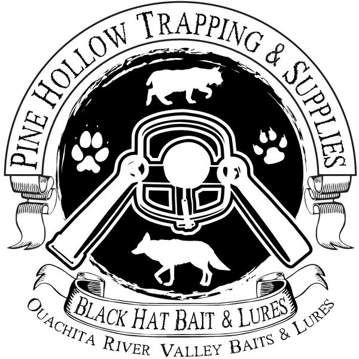
This isn't a mockup of somebody's products — it's Pine Hollow's. Tap through the Black Hat line exactly the way a trapper sees it in the app: the sponsored rows, the gold pill, your logo, the bio sheet.
Before you look at our numbers, look at the game every other kind of advertising makes you play. It comes in three flavors — and every one of them is built for big companies, not a family lure operation like Pine Hollow.
You bid against everybody else for the same eyeballs, and you pay every time somebody clicks your ad. On Google's Display Network that runs about $0.63 to $1 a click (2025 benchmarks). Some of those clicks are real customers. Some are fat thumbs, bots, and accidents — and you pay for all of them the same.
The small-maker problem: the click is only the start. You need a website built to convert, ad creative that stops thumbs, keyword work, and somebody babysitting the bids every week — plus a test budget of hundreds a month just to learn what works, while you're bidding against companies with marketing departments.
Don't want to pay per click? Pay every time your ad blinks past somebody — about $3.12 per thousand impressions on the Display Network. The average click-through rate is 0.46% (WordStream, 2025): out of 200 people who "saw" your ad, not even one clicked. And about a third of US internet users run ad blockers — a chunk of the impressions you paid for never existed in the first place.
Brands pay for every phone that installs their app: $2.50 to $5.00 a pop in North America (2026 benchmarks). Sounds clean — until you see what happens next. About one in four people open the app the day after installing. After a month it's single digits, around 4–7% (UXCam / Adjust, 2026). You paid for a hundred installs and ninety-some are gone.
All three need the same things a small lure maker doesn't have: a marketing funnel, creative that converts, somebody managing it every month, and a budget big enough to survive the learning phase. The game is built for big companies.
| Their game | Our game |
|---|---|
| Bid for clicks against everybody | One flat annual fee |
| Pay for bots, fat thumbs, and blocked ads | No click fraud — there are no clicks to fake |
| Build a funnel, write creative, babysit bids | Nothing to manage |
| Hope the ad finds a trapper | Pine Hollow lives inside the tool he/she opens every day of season |
| Seen who-knows-when | Seen at the exact moment he/she's choosing bait or lure for a set |
$350 a year, and you're done.
The original plan was to charge for this app. We scrapped it. The trapper never pays — no download fee, no subscription, no "pro" unlock. Pine Hollow and reputable trapping companies like it carry the cost instead, because their name lives inside the tool a trapper opens every single day of season.
The deal is simple: as long as good companies in this industry want to support the app, it stays free for the everyday trapper. Forever.
That is not charity — it is how the industry grows. The younger generation lives on technology. If we want them in this sport, we meet them where they are. This is that: an old craft, a modern tool, free for whoever wants to learn it.
You don't pay for the app. You pay to be the name inside it.
Every placement below was reviewed and approved from real app screenshots. Design rule: sponsors feel built into the app — no pop-ups, no banners, no interstitials, nothing between a trapper and his/her data. One visual language everywhere: logo medallion, gold accent, cream text on dark green.
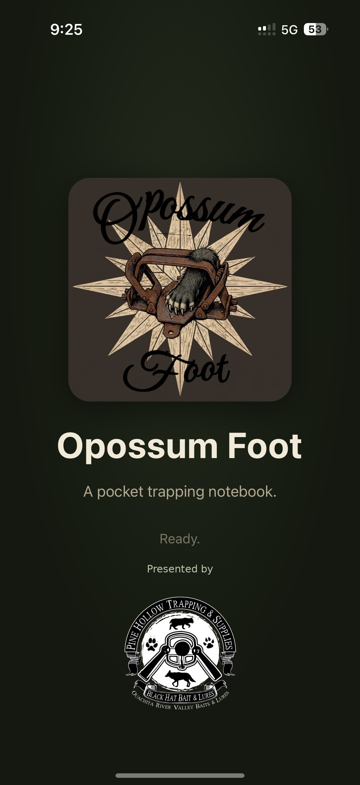
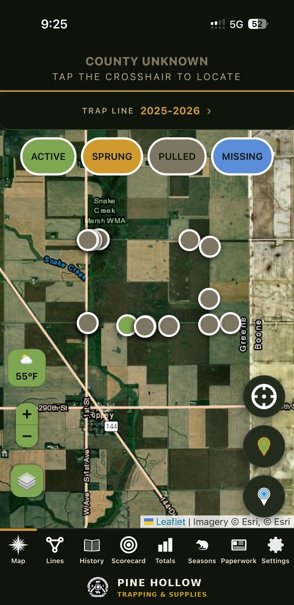
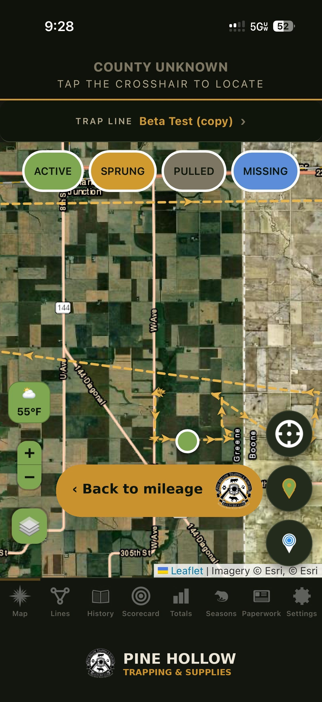
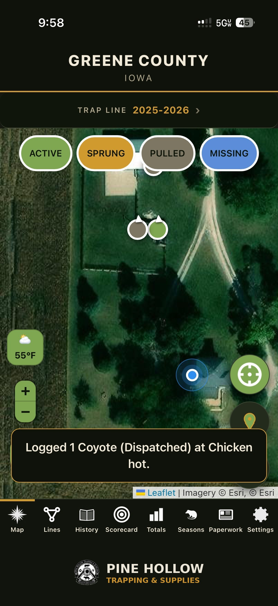
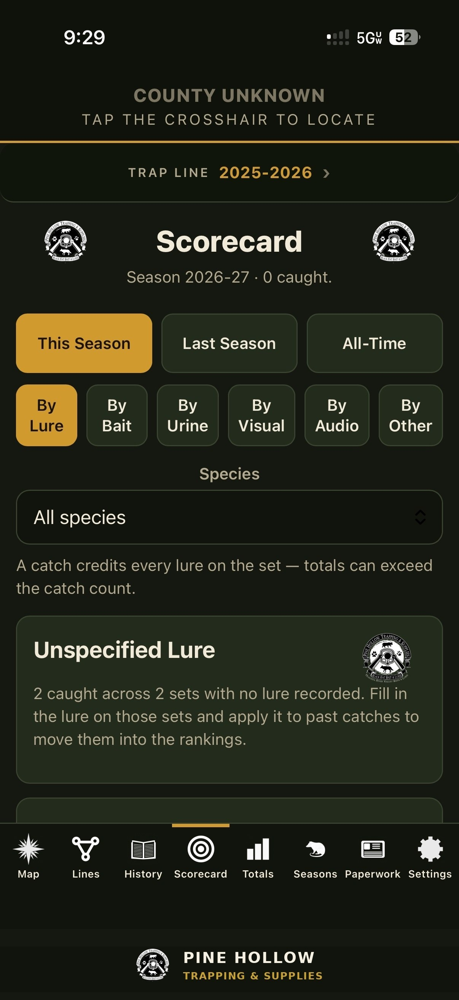
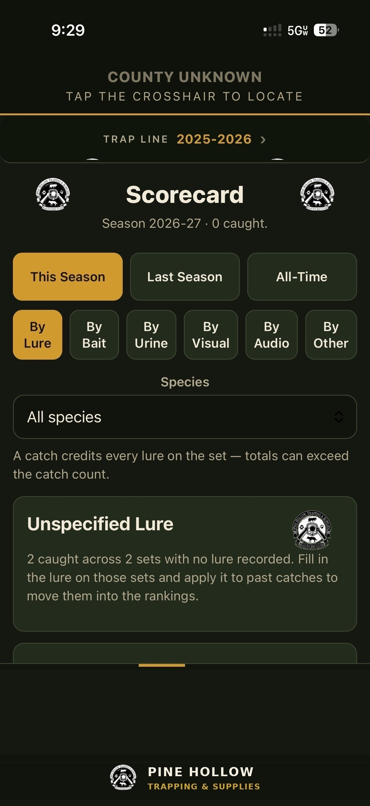
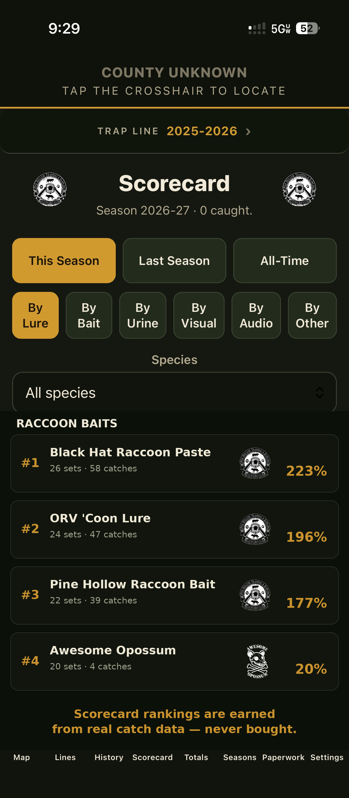
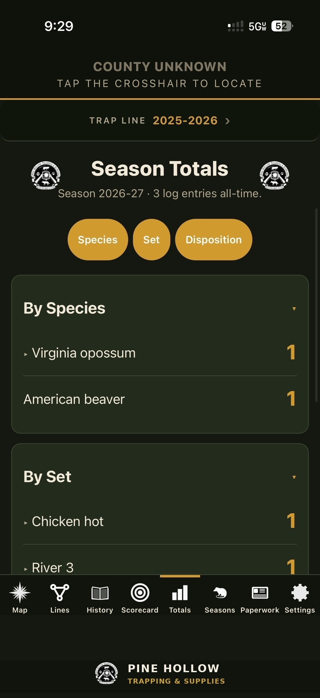
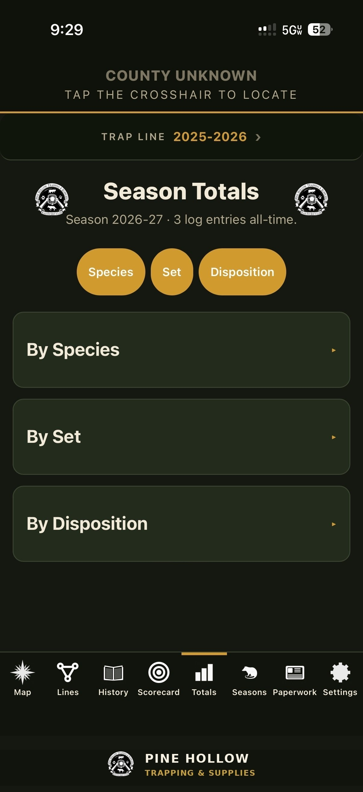
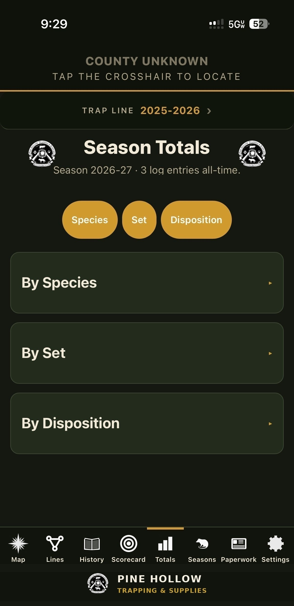
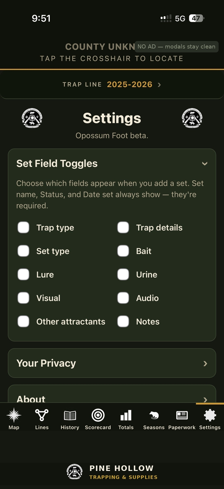
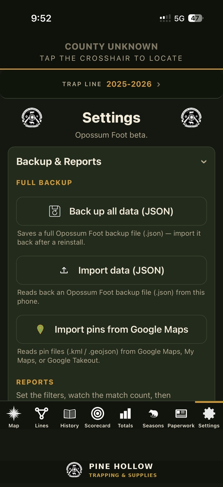
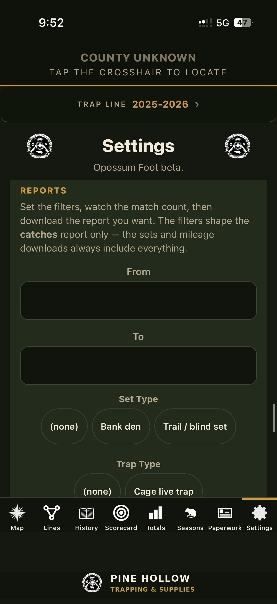
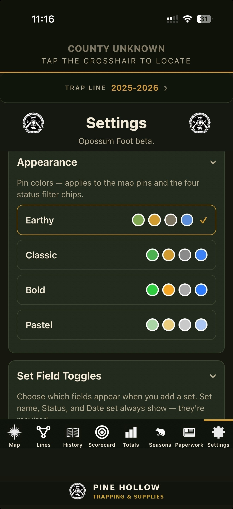
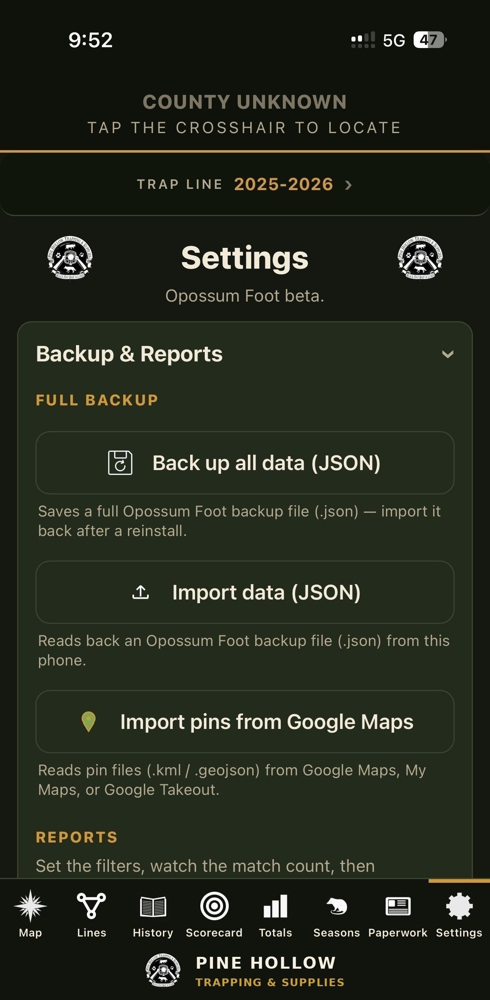
Privacy, legal, license, landowner paperwork, destructive/purge actions, and confirmation screens stay ad-free — permanently.
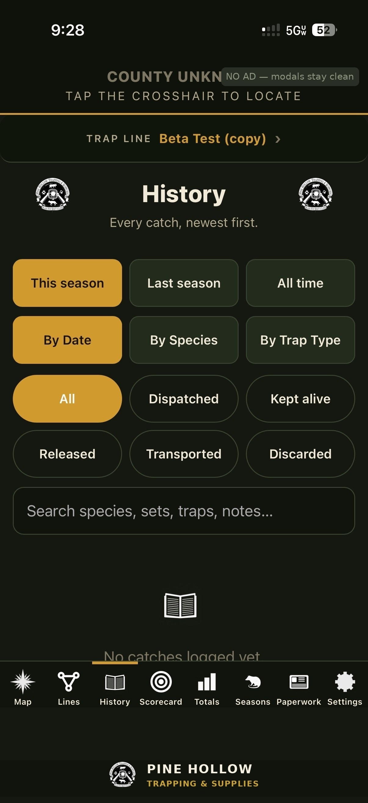
How the art sits: title badges are computed, not hardcoded — each badge centers in the space between the title text and the screen edge, at 1.5× the title's font size. Bottom banners are one shared component (centered logo + name lockup, below the tab bar) on every sponsored tab. When a real sponsor's logo goes in, the geometry doesn't change.
The Seasons and Lines tabs are held for one category-exclusive fur buyer partner — they are not part of Tiers 1–4 and are never sold piecemeal. Buyer presence rides on route pins on the map, a bottom banner on the buyer route page, season schedules and pickup alerts, and a "ready to sell?" card. This is a separate package with its own pricing, currently in draft.
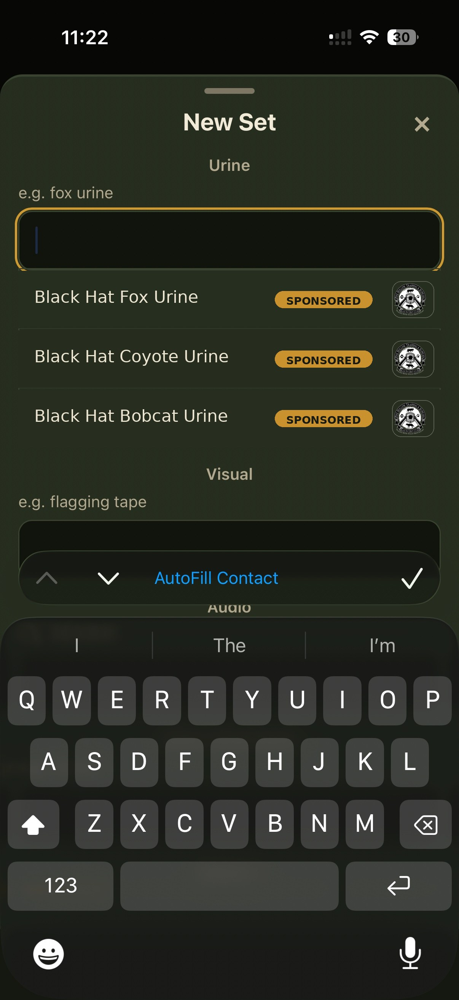
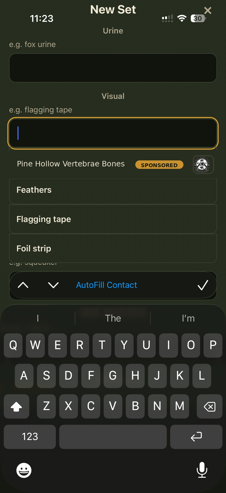
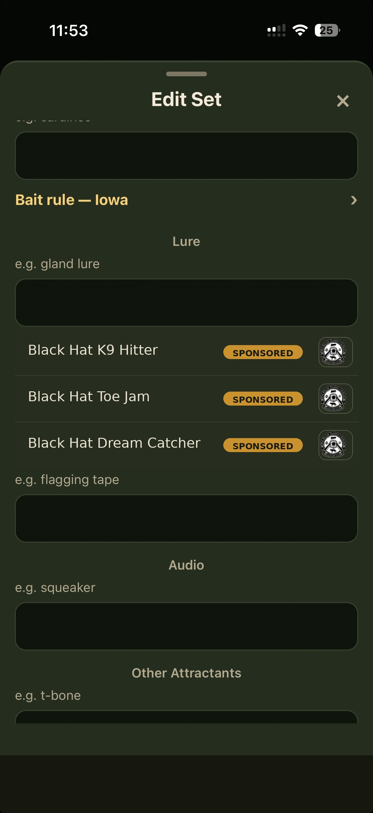
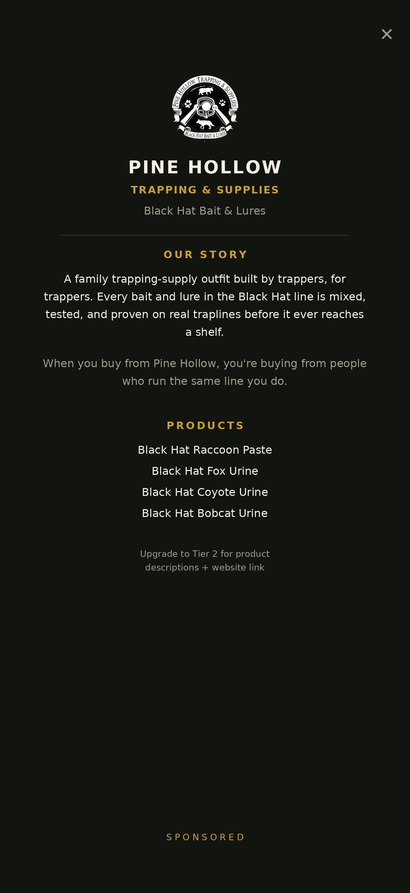
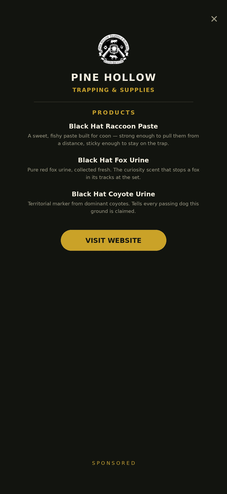
Dropdowns stay honest: sponsors get pre-listed with branding, but any trapper can always type any brand freehand. Open slots: trap manufacturer, audio attractants, other attractants — future sponsor inventory.
Four tiers. Higher tiers include everything below. All commitments are paid upfront — no monthly billing, no chasing payments. Two doors in:
| Commitment | How it works |
|---|---|
| 12 months upfront | 10× the six-month monthly rate — two months free. The standard pitch and the best per-month price. |
| 6 months upfront | 6× the monthly rate — no discount. One season, the low-risk way in. |
No month-to-month. A sponsor who's paid upfront is invested — no churn, no accounting headache.
Founding = first ten sponsors. Founders keep 35% off the current rate, forever — the discount is locked, not the dollar amount, so your price stays a third below whatever newcomers pay as rates grow. Pine Hollow holds founding spot #1.
Calibrated against real print: even the smallest local weekly newspaper charges $100+/week ($400+/month) for a small ad — general readers, seen once. Tier 1 at ~$29/mo puts a maker in front of targeted trappers daily, all season — their products in the dropdown with logo and story.
| What you buy | What it costs | What you actually get |
|---|---|---|
| State convention vendor table | $25–$100 for ONE weekend | A few hundred trappers walk past over two days. Weather-dependent — and you're standing there both days. |
| National convention (NTA / FTA) | $100 table — $800–$1,500+ all-in | 6,000–9,000 trappers over 4 days, once a year (NTA national — Michigan DNR/NTA, 2014). The FTA rendezvous drew 8,000+ and $928,000 in visitor spending (WI Dept. of Tourism, 2013) — that's what it costs everybody to be there. Table $100, hotel ~$135/night, gas, food, 4–5 days away from the shop (FTA Spencer 2025 vendor sheet) — and you're one of 200+ vendors fighting for the same foot traffic. |
| Small back-of-magazine ad | $100–$250/month ($1,200–$3,000/year) | A static image, seen once when the issue lands. Then it's birdcage liner. |
| Fur Taker quarter page (published rate) | $50/issue — $600 for a full year | Your ad sharing the magazine with every competitor's ad. |
| Opossum Foot Tier 1 | $350/year (~$29/month) | Your brand in a trapper's pocket every day of the season — right when he/she's choosing what to put on the set. Brief business bio. No cap — as many makers as fit. |
The math: one full year in a trapper's pocket — daily, all season, at the exact moment he/she's choosing bait or lure for a set — costs about one and a half to three and a half months of a small magazine ad, and about what three weekends of convention tables run. And unlike the booth, it works while you're home.
The all-in: one national rendezvous runs a small maker $800–$1,500+ all-in — table, hotel, gas, food, four days away from the shop — for four days, once a year, as one of 200+ vendors. Tier 1 is $350 for the year: in the pocket every day of season, no hotel, no gas, no standing behind a table — for less than one national convention weekend, all-in. "You already spend this money every year to stand in a fairground for four days. This is less, and it works 365."
Same placement, two doors in. All paid upfront — 12-month or 6-month terms only. No monthly billing, ever.
| Model | How it works | Price |
|---|---|---|
| Full | One brand owns the placement for the whole term. Your logo IS there. | Full tier rate, paid upfront (the rate card above) |
| Shared rotation | Max 4 sponsors per placement (Tiers 2–3), each owns it one full week, static all week, changes Mondays. Tier 4: max 2, quarterly turns. Tier 1 is separate — no rotation, no cap: every maker's products sit in the dropdown together. Never animated, never a carousel — one sponsor per screen, period. | Shared = a quarter of the time, paid upfront: Tier 2: $500/yr · $300/6mo Tier 3: $900/yr · $540/6mo Tier 4 shared (max 2, quarterly): $4,000/yr · $2,400/6mo Tier 1 is separate — no rotation, no cap. $350/yr: rows + brief bio. |
Rotation weeks follow payment order — whoever pays first is first in the rotation; sponsors don't choose weeks. Rotations are first-paid, first-served — no competitor exclusions. They're all competitors; if somebody has a genuine problem sharing a rotation, they raise it and Tanner settles it case by case.
Upgrades take effect at renewal, not mid-term — nobody who's paid ever gets bumped. When a shared sponsor's term is up, they get first dibs on buying their tier outright before the slot opens to anyone else. The one exception: if a rotation has only one paid sponsor in it, they can upgrade on the spot — unused shared months credit toward the full price, and the new 6- or 12-month term starts that day.
It works like magazine advertising: pay by placement size and exposure. The Trapper's Post print rate card is the anchor: $100–150/mo in-app undercuts a small recurring print ad in the #1 trapping trade paper.
Founding sponsor offer: the first ten sponsors lock founding rates forever. Once your products are in the app, every demo and teaser video shows your branding — and you advertise Opossum Foot back by running the app with your own name in it. Cross-promotion both directions, no ad spend either side.
The low-risk way in: a 6-month Tier 1 term is $210 — one season. If it doesn't move product, walk away.
Not hype — just the numbers, with sources:
"I'm not asking you to quit your magazine ad. I'm asking where the trappers went — they're on their phones, in the woods, deciding what to buy. This puts your brand in the phone at that exact moment."
Why in-app beats both: print's credibility comes from context, not tracking — readers trust it because the ad is there for the subject, not because they were followed around the internet. Opossum Foot works the same way: your brand shows up when a trapper is logging a set and choosing bait — pure context, zero tracking. No accounts, no cloud, nothing phoning home.
Hard rules: Dropdowns stay honest — freehand entry always open. Catch data stays honest even when it embarrasses a sponsor. Scorecard rankings are earned from real catch data — never bought. Trap locations are never for sale; reports are aggregated and anonymized.
Picture a kid in the backseat with a tablet, riding along the line with Mom or Dad — logging every set while Mom or Dad is down in the ditch doing the dirty work. That kid is the next trapper.
Tanner did the same thing as a kid — kept it all in his head. Most trappers who were lucky enough to trap young did. Every set, every catch, carried around by memory. Now that kid has a way to log it all, and it makes the next morning's check even more exciting. And when that check pays off? The next best part is watching the count climb through the season. Everybody wants bragging rights — even kids.
These kids already live on tablets. The difference is most of what they do on them teaches nothing — games that burn time and build no skills. This takes the same device they already carry and turns it into a tool for something real: reading sign, watching weather, learning where animals move and why. Things Tanner's generation had to figure out the hard way, if they figured them out at all.
Keeping this app free for that kid is not free. Somebody has to build it, run it, and keep it honest — and right now that somebody is one trapper in Iowa, carrying the cost himself because he believes this industry is worth it.
Pine Hollow's sponsorship is what makes that sustainable. You are not buying an ad. You are keeping the best tool this sport has ever had free for the kid in the back seat.
The trapper never pays. Somebody has to — and it should be the companies who believe in this sport's future.